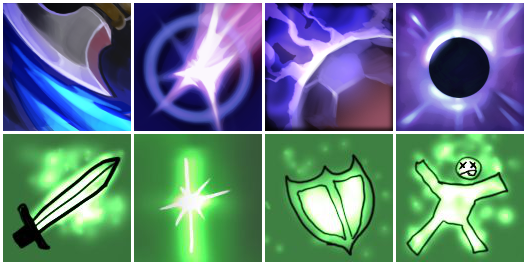

Anti-Mage

Скиллы
-
Скилл 1: Mana Break - Описание: Уничтожает ману врага и наносит урон.
-
Скилл 2: Blink - Описание: Перемещает Anti-Mage на короткое расстояние.
-
Скилл 3: Spell Shield - Описание: Уменьшает магический урон.
-
Ультимейт: Mana Void - Описание: Наносит урон врагам на основе их
недостающей маны.
Как играть
Стратегия игры за Anti-Mage: Сосредоточьтесь на фарме и получении
предметов, чтобы стать сильным в поздней игре. Используйте Blink для
уклонения от атак и Mana Void для нанесения урона врагам с низкой маной.
Назад к списку персонажей